큰 순서와 이유
주황 칸 네 곳은 순서를 바꾸면 하루를 기다리거나 다시 분해해야 하는 곳입니다.
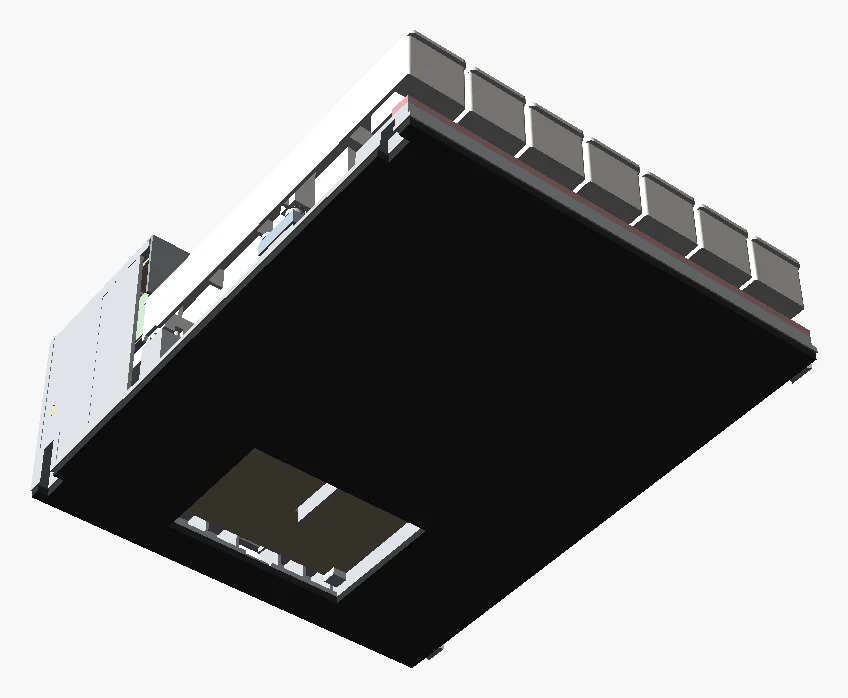
준비물
모듈 하나에 드는 양입니다. 사진은 구매 목록의 실제 상품 사진, 회색 글자는 구매 목록 번호입니다.
출력물 (한 옥타브 묶음 그대로)
| 출력물 | 개수 | 색 | 쓰는 단계 |
|---|---|---|---|
| 백건 C·D·E·F·G·A·B | 7 | 흰색 | 05, 06, 12 |
| 흑건 C#·D# (같은 파일 2개), F#, G#, A# | 5 | 검정 | 05, 06, 12 |
| 레버 캐리어 C ~ B (옆벽에 음 이름 새김) | 12 | 회색 | 03, 10 |
| 레버 덮개 (캐리어 +x 옆벽 + 립, 모두 같은 모양) | 12 | 회색 | 03 |
| 프레임 바닥틀 (모듈: 바닥·앞 레일·밸런스 레일) | 1 | 회색 | 07~ |
| 프레임 레버틀 (모듈: 윗판·핀 5장·뒷벽·뒤 선반) | 1 | 회색 | 07~ |
| 프레임 가이드 탭 백건 / 흑건 (키퍼 훅 포함) | 7 + 5 | 회색 | 07 |
| 센서 바 | 1 | 회색 | 09 |
| 패드 바 칸1 ~ 칸4 (PORON 5T용) | 4 | 검정 | 13 |
| 가림판 띠 | 1 | 검정 | 15 |
| 레버 봉 끝 마개 (Ø4 × 1.2) | 1 | 회색 | 11 |
| 공구 T1a 벤치 지그 받침, T1b 높이 블록, T2 캡스턴 게이지(가짜 레버), T3 밸런스 핀 높이 게이지 | 4 | 회색·검정 | 04, 06, 07 |
| P-MB 제어 기판 지그 (만능기판 자르기·뚫기) | 1 | 회색 | 08 전 납땜 |
구매품·소모품
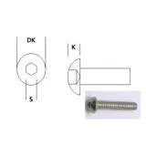
캡스턴 M3×6 버튼헤드12개i014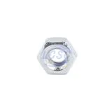
M3 육각너트12개i011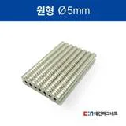
네오디뮴 자석 Ø5×2 N3512개i098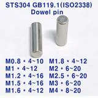
밸런스 핀 Ø2×1212개 + T1a용 1i121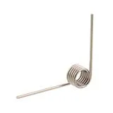
미스미 토션스프링 C-UA90R5-3-0.512개i123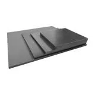
강철 띠 9T×19 → 블록 4013개 (T2용 1)i119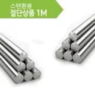
SUS304 환봉 Ø4161.4 × 2 + 토막 3i066 · i067 M3×6 볼트 (제어 기판)2개i059
M3×6 볼트 (제어 기판)2개i059 M3×10 볼트 (센서 바 2 + 레버틀 4)2개 + 4개i058
M3×10 볼트 (센서 바 2 + 레버틀 4)2개 + 4개i058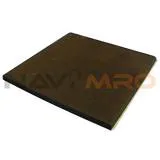
PORON 5T 점착6×12.2 × 12i124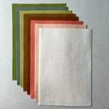
울 펠트 1T패드 겉면 · 쉼 펠트 바탕i107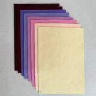
울 펠트 2T캡스턴 띠 · 앞 · 키퍼i106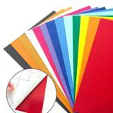
0.5T 접착 펠트지부싱 천 · 쉼 펠트 겹i062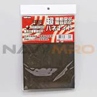
하네나이트 1T앞 펠트 밑층i125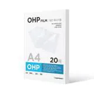
OHP 필름 0.1 (PET 심)필요한 만큼i069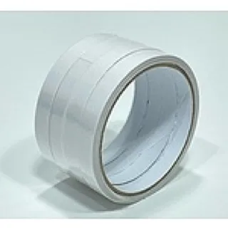
종이 양면테이프EVA 붙이기i040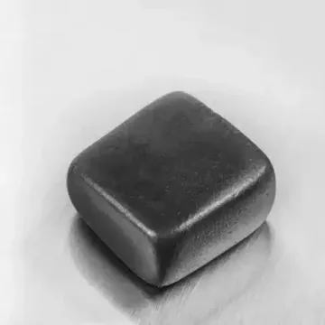
텅스텐 퍼티DW 조정 때만i063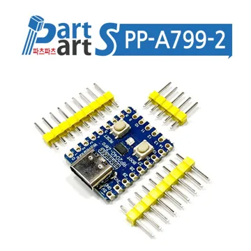
RP2040-Zero1개 (MB 위)i084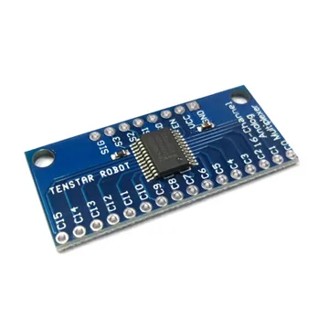
CD74HC4067 먹스 모듈1개 (MB 위)i085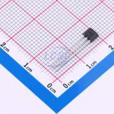
홀센서 DRV5055A212개 (SB)i004공구
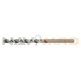
HSS 드릴 날 Ø4.0허브·핀 보스·공구 구멍i126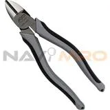
피아노선 니퍼스프링 다리 24곳i127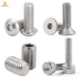
육각 렌치 2.0캡스턴 · M3 버튼헤드i065그 밖에 가진 것으로: 전동 드릴, 캘리퍼스, 사포 #120과 소독용 알코올, 줄, 커터칼, 이쑤시개 Ø2, 복사지(0.1 mm 펀칭), 영수증 종이(0.05 띠), 인두(기판).
출력물 확인·후가공
- 개수를 위 표와 맞춥니다. 레버 캐리어는 옆벽의 음 이름(C ~ B)으로, 패드 바는 윗면의 칸 이름(칸1 ~ 칸4)으로 구분합니다.
- 서포트: 건반만 Bambu Studio 서포트를 켜고 뽑았습니다(트리 자동 · 빌드 플레이트에서만) — 숨은 빔·꼬리 밑(바닥에서 백 15 · 흑 27 mm, 위에 레버가 0.7 위라 채울 수 없음)에만 트리가 생기니 꼬리째 잡아 한 덩어리로 떼어 냅니다. 프레임·레버·패드 바·덮개는 천장이 없는 모양이라 서포트가 없습니다 (A13).
- 건반 꼬리 밑(트리 서포트가 닿은 면)과 노치(R2.55) 안쪽에 실이 남지 않게 다듬습니다. A12의 떼는 빗·기둥은 없어졌습니다.
- 패드 바: 잎 혀(0.6 × 1.6 × 8)는 일부러 0.3 아래로 처지게 출력했으니 펴지 않습니다. 윗면은 한 평면입니다.
- Ø4.0 드릴: 레버 캐리어 허브 12곳, 레버틀 핀 보스의 레버 봉 구멍(눈물방울 Ø3.9). 낮은 속도로 곧게 뚫어 PETG가 녹아 붙지 않게 합니다.
- 밸런스 핀 구멍(Ø1.95, 막힌 구멍)은 핀이 전혀 안 들어갈 때만 Ø1.9~2.0으로 다듬습니다. 가볍게 끼는 압입이 정상입니다.
- M3 너트를 건반 꼬리 +x 옆 홈(맞변 5.6 × 2.8)에 하나 넣어 보아 끝까지 들어가는지 확인합니다. 홈 천장은 구멍 없는 0.4 막입니다(A15: 서포트 없이 출력, 캡스턴 끝이 처음 들어갈 때 뚫음).
봉·강철·스프링·펠트 자르기
| 무엇 | 재료 | 크기 (mm) | 개수 | 붙는 곳 |
|---|---|---|---|---|
| 건반 봉 · 레버 봉 | SUS304 Ø4 (i066 · i067) | 161.4 ± 0.2 | 1 + 1 | 봉 받침 / 핀 보스·허브 |
| 공구용 봉 토막 | 같은 봉 | K 31.6 · L 20.6 · 교정 31.6 | 3 | T1a 지그 |
| 강철 블록 | 강철 띠 9T×19 (i119) | 40 −0.1/−0.3, 두께 8.9~9.1만 | 13 | 레버 12 + T2 1 |
| 스프링 다리 | 미스미 C-UA90R5-3-0.5 | 긴 다리 22.3 · 짧은 다리 8.0 | 12 | 레버 허브 |
| 업스톱 패드 | PORON 5T + 펠트 1T | 6 × 12.2 | 12 | 패드 바 쐐기 |
| 캡스턴 펠트 띠 | 펠트 2T (i106) | 7 × 15.5 | 12 | 레버 캐리어 밑 y176.5~192 |
| 쉼 펠트 | 펠트 1T + 0.5T 펠트지 | 8.0 × 2.7 (F 4.76 × 2.7, F# 4.39 × 2.7) | 12 | 건반 꼬리 밑 끝 |
| 종이 펀칭 | 복사지 0.1 | 쉼 펠트와 같게 | 24 + 여분 | 쉼 펠트 위 (건반마다 2장에서 시작) |
| 백건 앞 펠트 | 하네나이트 1T 위 펠트 2T | 7.5 × 163.5 띠 | 1 | 앞 레일 y1.5~9.0 |
| 흑건 앞 펠트 | 하네나이트 1T 위 펠트 2T | 4.5 × 10.4 | 5 | 흑건 앞 자리 y54.5~59.0 |
| 키퍼 펠트 | 펠트 2T | 5.2 × 3 | 12 | 키퍼 훅 밑 |
| 부싱 천 | 0.5T 펠트지 (i062) | 자리에 맞춰 | — | 건반 노치·핀 홈 양벽, 프레임 가이드 탭 양옆 |
| PET 심 | OHP 0.1 (i069) | 6 × 12.2 | 몇 장 | 패드 밑 (14단계) |
- 봉 두 개는 끝의 버를 줄로 둥글게 다듬습니다. 허브와 칼라를 긁지 않게 하기 위해서입니다.
- 강철 블록은 캘리퍼스로 두께를 재어 8.9~9.1만 씁니다. 캐리어 칸이 9.2라 접착층이 한쪽 0.10이 됩니다. 모따기는 하지 않고 버만 뗍니다.
- 스프링 다리는 피아노선 니퍼로 자릅니다(일반 니퍼는 날이 상함). 긴 다리는 코일 중심에서 끝까지 22.3, 짧은 다리는 코일을 떠나는 점에서 8.0. 굽히지 말고, 자른 끝 거스러미는 줄로 뗍니다.
레버에 강철 붙이기 · 24시간 굳힘
- 강철의 두 19 × 40 옆면, 캐리어 옆벽 안쪽, 레버 덮개 안쪽을 #120 사포로 거칠게 하고 알코올로 닦습니다.
- 강철 두 옆면에 MS 폴리머를 얇게 폅니다. 블록 하나에 약 0.2 mL입니다. 덮개가 닿는 캐리어 앞벽·뒷벽 옆면에도 조금 바릅니다.
- 캐리어를 −x 옆벽(음 이름 반대쪽)이 아래로 가게 눕히고, 열린 +x 쪽에서 강철을 칸에 내려 넣습니다. 아래 립·위 립에 걸쳐 앉습니다.
- 레버 덮개를 립이 안쪽으로 가게 덮습니다: 위 앞 립 앞끝이 캐리어 앞 뚜껑(y153)에, 위 뒤 립 뒤끝이 칸 뒷벽(y190)에 닿는 자리입니다. 고무줄로 둘러 눌러 둡니다.
- 윗 립·아래 립·펠트 자리로 밀려 나온 접착제는 바로 닦습니다. 강철 윗면은 패드가 닿는 면이라 깨끗해야 합니다.
- 24시간 그대로 둡니다. 그동안 04~07단계를 합니다.
- 굳은 뒤 캡스턴 펠트 띠 2T를 캐리어 밑(y176.5~192.0)에 붙입니다(설계서 표기: 흑연 처리).

출력 공구 준비·교정
한 번만 합니다. 이 공구들이 프레임 한 대의 자리를 재현하므로, 공구와 프레임은 같은 프린터·같은 층 설정으로 뽑은 것을 씁니다.
- Ø4.0 드릴로 T1a의 K·L 구멍과 T2 허브를 뚫습니다.
- 봉 토막을 끼웁니다: K 31.6(건반 봉 자리), L 20.6(레버 봉 자리). 교정봉 31.6은 따로 둡니다.
- 13번째 강철 블록을 T2(가짜 레버) 주머니에 눌러 끼웁니다(스냅 립).
- 예비 밸런스 핀 1개를 T3로 T1a 핀 구멍에 눌러 넣습니다. 이것이 T3의 첫 검증입니다.
- 교정: 건반 없는 T1a의 영점 받침 홈(백 y188.34, 흑 y180.31)에 교정봉을 놓고 T2를 내립니다. 바늘 윗면과 읽기 턱이 손톱으로 같은 높이면 끝. 다르면 높은 쪽을 한 번 사포질합니다. 백·흑 두 자리 차이가 바늘 0.22보다 크면 T2 밑면을 평평하게 다듬습니다.
| 출력 검증 (캘리퍼스, 밑면에서) | 값 | 허용 |
|---|---|---|
| T1a: K 봉 토막 윗면 · 쉼 선반 윗면 · 영점 홈 바닥 · 읽기 턱 | 20.50 · 17.05 · 24.00 · 62.50 | ±0.05 |
| T1b 높이 블록 땅: 백+ · 백− · 흑+ · 흑− | 38.65 · 38.35 · 50.65 · 50.35 | ±0.03 |
| T3: 누름 구멍 바닥 · GO 천장 · NO-GO 천장 (발 면에서) | 4.30 · 4.40 · 4.20 | ±0.05 |
건반 부품 붙이기
- 부싱 천 0.5T를 노치(R2.55) 안쪽과 밸런스 핀 홈 양쪽 벽에 붙입니다. 천이 접혀 겹치지 않게 합니다.
- 자석 Ø5×2를 건반 밑 자리(y67, 센서 줄 바로 위)에 눌러 넣고 순간접착제 한 방울. 12개 모두 같은 극이 아래로 오게 합니다(S극이 센서 쪽이면 누를 때 값이 올라감). 자석 하나를 기준으로 정해 아래쪽 면에 매직으로 점을 찍어 두면 헷갈리지 않습니다.
- 캡스턴: M3 너트를 꼬리 숨은 빔의 +x 옆 홈에 밀어 넣고, 버튼헤드 M3×6을 머리가 위로 오게 위 Ø2.8 구멍으로 돌려 너트에 겁니다. 나사 끝이 홈 밑 0.4 막에 닿으면 조금 더 돌려 뚫습니다(빡빡하면 Ø3 드릴을 손으로 밑에서). 높이는 06단계에서 맞추니 몇 바퀴만 걸어 둡니다.
- 쉼 펠트: 꼬리 밑 끝(y196.3~199)에 종이 펀칭 2장 + 쉼 펠트(1T 바탕 위 0.5T)를 겹쳐 붙입니다. 06단계에서 펀칭을 더하거나 빼므로 펀칭은 떼어 낼 수 있게 약하게 붙입니다(붙이는 방법은 설계서에 정해져 있지 않음). F·F#은 USB 홈을 넘지 않는 좁은 펠트입니다.
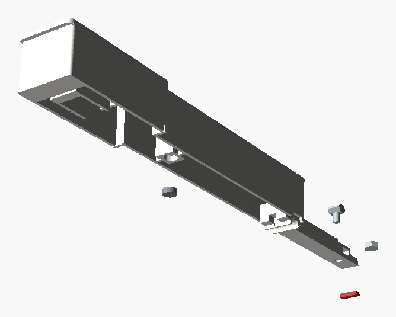

벤치 지그에서 높이·캡스턴 맞추기
건반은 앞이 무거워서(무게중심 y89.8, 봉 y141) 꼬리를 누르는 힘에 따라 앞 높이가 달라집니다. 그래서 손 대신 가짜 레버 T2가 실제 레버와 같은 힘(캡스턴 힘 백 1.53 N · 흑 0.99 N)으로 꼬리를 누른 채 잽니다. 건반은 아직 프레임에 넣지 않습니다.
- T2를 주차 기둥에 젖혀 두고, 건반 노치를 T1a의 K 봉 토막에 끼웁니다.
- T2를 캡스턴 위에 내립니다. 손으로 건반을 누르지 않습니다.
- 높이 먼저: T1b를 받침판에 세워 건반 머리 옆면에 붙이고 손톱으로 +/− 땅과 비교합니다. 앞 높이가 두 땅 사이(창 ±0.15)에 오면 합격.
높으면 펀칭 1장 더, 낮으면 1장 뺍니다. 펀칭 한 장(0.1) = 앞 높이 0.25.
높음 한계 낮음 한계 백건 43.65 43.35 흑건 55.65 55.35 - 캡스턴 나중: 바늘 윗면이 읽기 턱보다 낮으면 캡스턴을 풀고, 높으면 조입니다. 돌릴 때는 T2를 젖히고 육각 렌치 2.0을 위에서 넣습니다. 1/8회전 = 바늘 0.34 mm(백) · 0.22 mm(흑).
- 12개를 모두 맞춘 건반은 펀칭이 빠지지 않게 꼬리를 위로 하여 순서대로 놓아 둡니다.
프레임 준비
- 가이드 탭 12개(백 7, 흑 5)를 바닥틀의 탭 자리에 꽂습니다. 촉 앞쪽 1 mm가 짧아 키퍼 훅이 앞(연주자 쪽)으로 갈 때만 끝까지 들어갑니다. 자리에 순간접착제를 한 방울 넣고 끝까지 눌러 곧게 세웁니다.
- 레버틀은 아직 얹지 않습니다 — 08단계에서 제어 기판을 바닥틀 기둥 위에 올린 뒤 얹습니다(A13).
- 밸런스 핀은 왼쪽 핀부터 하나씩: 핀을 구멍에 세우고 T3의 누름 구멍을 핀 위에, 울타리를 레일 앞면에 댄 뒤, 발이 레일 윗면에 닿을 때까지 엄지나 바이스로 누릅니다.
- 누른 핀은 바로, 오른쪽 이웃 핀을 꽂기 전에 게이지를 +X로 옮겨 확인합니다: GO는 지나가고 NO-GO에서 멈추면 합격(꼭대기 z23.20~23.40). GO에서 막히면 다시 누르고, NO-GO를 지나가면 조금 뽑아 다시 누릅니다. 핀을 다 꽂은 뒤에는 이웃 핀에 걸려 잴 수 없습니다.
- 건반 봉을 봉 받침 위, 멈춤 기둥 사이에 놓습니다.
- 앞 펠트: 백건 띠(하네나이트 1T 위 펠트 2T)를 앞 레일 y1.5~9.0에, 흑건 조각 5개를 y54.5~59.0 자리에 붙입니다.
- 키퍼 펠트 12개를 키퍼 훅 밑에, 부싱 천을 가이드 탭 12개의 양옆에 붙입니다.
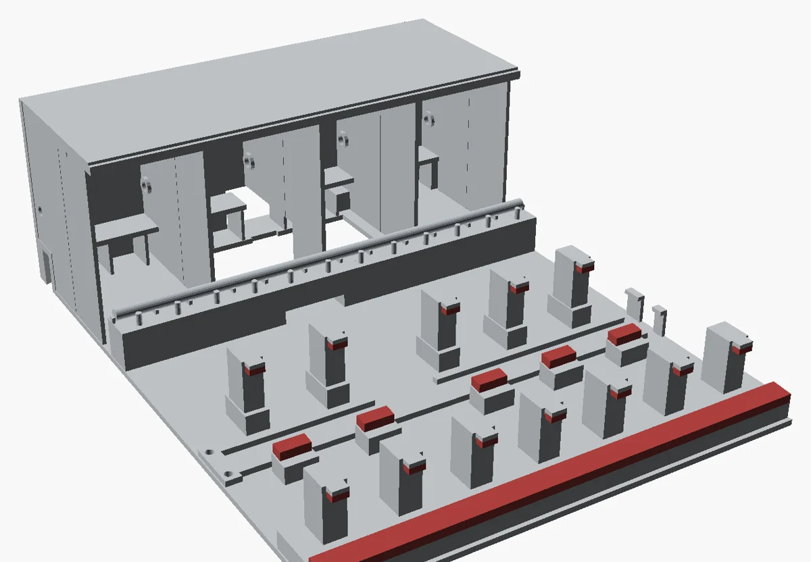
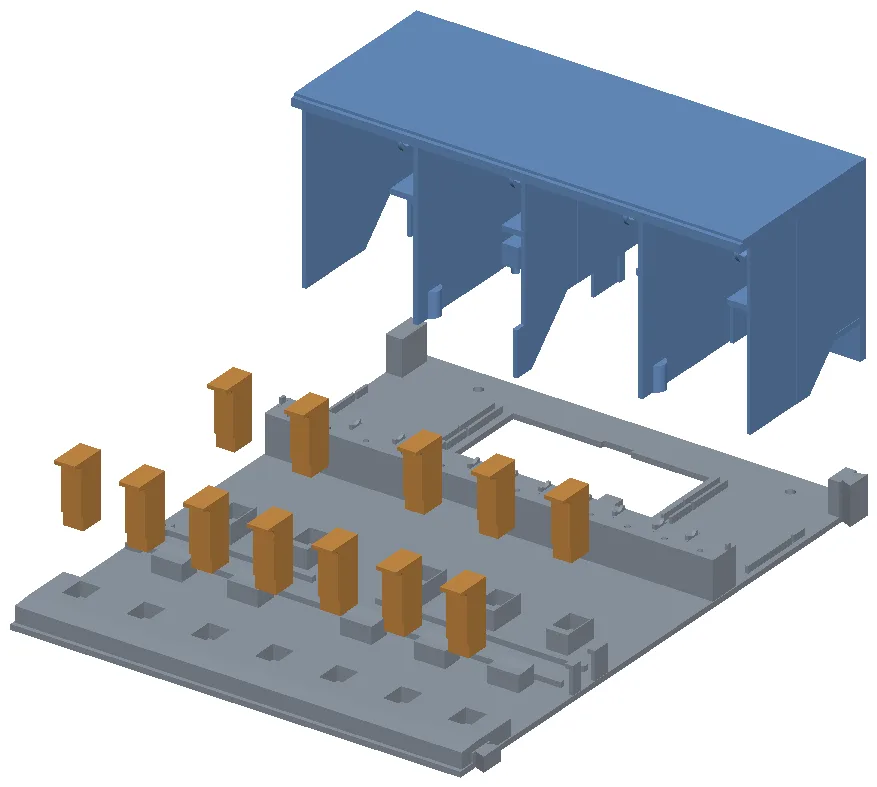
제어 기판 MB 올리기 → 레버틀 얹기 · 위에서
MB는 BE163 만능기판을 P-MB 지그로 70 × 50으로 잘라 만든 기판입니다. 납땜은 회로 도면 BRD-01(위)과 BRD-08(아랫면 배선)을 따릅니다.
- 바닥틀의 기판 자리(바닥이 막힌 곳, x46.25~118.25 · y144.5~196.5)에 기둥 4개(Ø6.4, 윗면 z9.0)가 서 있습니다. 기판을 부품 쪽이 위로 오게 들고, 위치 핀 2개(Ø2.8, 앞 오른쪽 · 뒤 왼쪽)가 기판 구멍에 들어가게 내려놓습니다.
- M3×6 2개를 위에서 (50.0, 149.0) · (114.5, 192.5)에 조입니다 — 기둥의 Ø2.5 구멍에 나사산을 냅니다. 머리는 기판 위에 옵니다.
- 리본은 기판 밑 바닥 위로, 밸런스 레일 밑 차선(x59~82, 40° 뾰족 지붕)을 지나 센서 기판 쪽에 둡니다.
- 레버틀을 바닥틀 위에 내려 놓습니다: 2·4번 핀과 양 끝 핀의 발이 바닥의 홈 둑 사이로, F|F# 핀이 기판 홈으로, 가운데 핀의 킬이 밸런스 레일 뒷면에 닿습니다. 모듈을 옆으로 세워 바닥 밑에서 M3×10 4개(앞 x41.66·123.93 y160.5, 뒤 선반 밑 x29·143 y203)를 조입니다. 나중에 레버째 떼어 볼 일이 없다면 발·둑·뒷벽 밑에 MS 폴리머를 함께 발라도 됩니다.

센서 바 + 센서 기판 SB
- 홀센서 DRV5055 12개를 센서 바 포켓에 눕혀 넣고, 리본 J201을 납땜한 센서 기판을 센서 바에 붙여 한 덩어리로 만듭니다(BRD-02).
- 덩어리를 제자리보다 1.5 mm 왼쪽에 내려놓아 기판을 받침 기둥·리브(윗면 z7.0)에 얹습니다.
- 오른쪽으로 밀어 바 끝을 오른쪽 턱(립 밑면 z13.6) 밑에 넣습니다. 이 턱이 오른쪽 끝을 잡아 모듈을 뒤집어도 바가 나사에만 매달리지 않습니다.
- 왼쪽 끝 M3×10 2개를 받침 기둥에 자가 탭으로 조입니다.
- MB에서 온 리본을 센서 기판에 잇습니다.

스프링 넣고 레버 넣기
스프링 (레버마다)
- 긴 다리가 코일의 오른쪽(+x) 끝에 오게 스프링을 듭니다.
- 짧은 다리 끝을 허브의 가둠 홈(폭 0.70) 입구에 대고 홈을 따라 끝까지 밀어 넣습니다. 코일이 넣는 슬롯으로 주머니에 들어가 앉습니다. 뒤집어 들면 짧은 다리가 홈에 맞지 않습니다. 선(0.5)이 안 들어가면 홈을 0.5 날로 다듬습니다.
- 넣는 슬롯이 뒤·아래로 열려 있어 코일이 제 무게로 빠질 수 있습니다. 이쑤시개를 허브 구멍과 코일에 꽂아 두고, 11단계에서 봉이 그 레버에 오기 직전에 뽑습니다.
레버 넣기 (건반 없는 프레임에)
- 레버를 앞에서 하나씩 밀어 넣어 허브 구멍을 레버 봉 줄(y203.25, z33.5)에 맞춥니다. 캐리어 옆벽의 음 이름 순서대로 C부터 B까지.
- 레버 앞은 제 무게로 내려앉습니다: C·C#·D·A·A#·B는 바닥판, E·F는 먹스 모듈 위, D#·G#는 기판 위 매단 보스, F#·G는 기판 윗면.
- 긴 다리가 뒷벽에 먼저 닿으면 손가락으로 감아 누른 채 넣습니다.

레버 봉·마개·긴 다리 걸기
- Ø4 레버 봉(161.4)을 왼쪽 끝 핀부터 꿰어 나갑니다: 핀 보스 → 허브(칼라끼리 맞닿음) → 스프링 코일. 레버를 손으로 받쳐 허브 구멍을 맞추고, 각 레버의 이쑤시개는 봉이 오기 직전에 뽑습니다.
- 왼쪽 핀 보스 구멍에 출력 마개(Ø4.0 × 1.2)를 핀 면과 같게 눌러 끼웁니다. 오른쪽 끝 핀은 막힌 벽입니다.
- 레버마다 들었다 놓아 제 무게로 자유롭게 도는지 봅니다. 뻑뻑하면 그 칼라 면을 사포질합니다(칸마다 축 놀음 0.30~0.46).
- 긴 다리 걸기: 긴 다리를 뒷벽 보스의 홈(2.4 × 3.2, 밑이 열림)에 밑에서 넣습니다. 바닥판 위 레버는 다리가 거의 풀린 채 홈 입구에 놓이고, 기판 위 레버(D#~G#)는 손가락으로 약 14° 감아 입구에 대고 놓습니다.

흑건 5개 → 백건 7개
06단계에서 맞춘 건반을 넣습니다. 부록 A(빼기)의 반대 순서입니다.
- 그 건반의 레버를 캐리어 앞 위 손톱 턱으로 15°까지 듭니다(윗판에 닿기 바로 전).
- 건반을 앞을 약간 든 채 비스듬히 밀어 넣습니다.
- 3 mm 뒤로 밀어 노치를 건반 봉 위로 가져갑니다.
- 블록(밸런스 핀 홈)을 핀 위에 내리고, 블록 위를 눌러 노치를 봉에 스냅합니다.
- 레버를 놓습니다. 레버가 캡스턴 위에 앉으면 끝. 흑건 C#·D#·F#·G#·A#을 먼저, 그다음 백건 C ~ B.
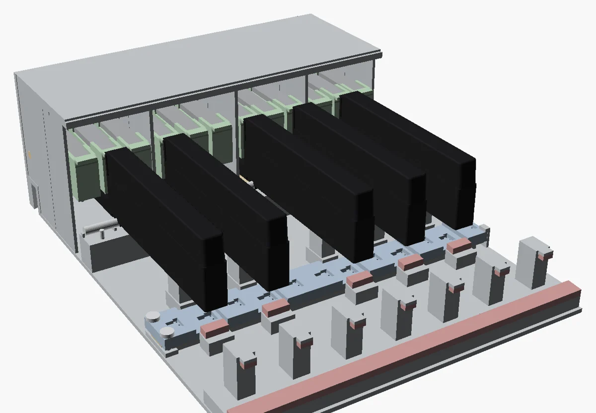
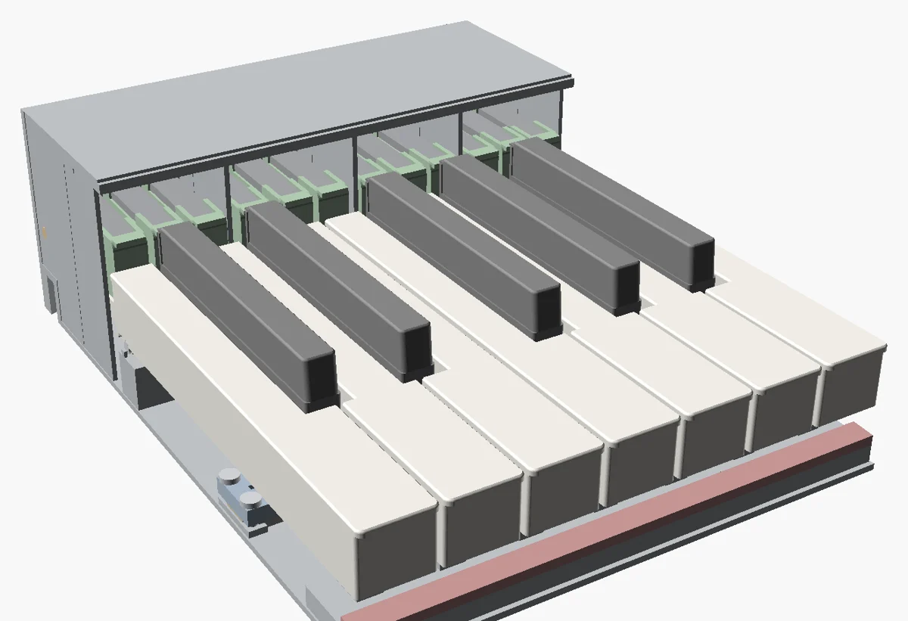
업스톱 패드·패드 바
- PORON 5T(점착면)에 펠트 1T를 겹친 패드 12개를 패드 바 쐐기에 붙입니다. 펠트가 강철이 닿는 아래쪽입니다.
- 패드 바 4개를 칸 이름대로(왼쪽부터 칸1 ~ 칸4) 윗판 밑 L 레일에 앞에서 밀어 넣어 뒤 멈춤(y185.0)까지 넣습니다. 가장자리 잎 혀의 돌기가 y163.5부터 립에 올라탑니다.
- 바를 위아래로 흔들어 놀지 않는지 봅니다. 잎 혀가 0.3 눌려 바를 윗판에 밀어 올리고 있어야 합니다.

업스톱 시점 맞추기 · 종이 띠
건반 끝까지 누르면 레버 강철이 패드에 먼저 닿고(백 −0.40, 흑 −0.45 mm) 곧 건반이 앞 펠트에 닿아야 합니다. 그 순서를 종이 띠로 확인합니다.
- 두께 0.05 종이 띠(영수증 종이)를 건반 앞 펠트 위에 놓습니다: 백건 y3~9, 흑건은 앞 모서리 밑.
- 건반 앞(백 y13, 흑 앞끝 + 10)에 추를 얹어 띠를 당겨 봅니다. 1 N ≈ 102 g.
| 이 힘에서는 띠가 미끄러짐 | 이 힘에서는 띠가 물림 | |
|---|---|---|
| 백건 | 0.75 N (약 76 g) | 1.05 N (약 107 g) |
| 흑건 | 0.96 N (약 98 g) | 1.43 N (약 146 g) |
- 더 작은 힘에 물리면: 패드 밑에 PET 심 0.1을 한 장 넣습니다.
- 더 큰 힘에도 안 물리면: 심을 한 장 뺍니다. 한 장 = 레버가 0.23° 먼저 닿음 = 건반 앞 0.18 / 0.22 mm.
- 심을 넣고 뺄 때는 가림판 띠(15단계 뒤라면)를 들고 그 칸 패드 바를 앞 손잡이로 뺍니다.
가림판 띠
- 가림판 띠를 윗판 앞 턱에 겁니다. 흑건 자리에 노치가 있어 방향이 하나뿐입니다.
- 건반을 모두 한 번씩 끝까지 눌러 가림판에 걸리는 곳이 없는지 봅니다.

첫 모듈 시험 → 바닥 EVA
이 옥타브가 처음 조립한 모듈이면 나머지 6개를 뽑기 전에 아래 시험을 합니다. 절차와 결과표는 최종본/05_조립·제작/03_단계0_시험_절차서.md에 있습니다.
| 시험 | 방법 (요약) | 합격 |
|---|---|---|
| 21 첫 모듈 정하중 | EVA 없이 C17a 받침 빗(00_단계0_시험출력/C17a.stl) 위에 모듈을 얹고, D~G 여섯 패드 자리 위에 36.7 kg을 실어 E·F 옆 윗판 처짐을 다이얼로 3번 | 처짐 ≤ 0.13 mm |
| 7 DW / UW | 추 컵을 건반 앞(백 y13)에 놓고 물을 넣어 내려가는 무게, 빼서 올라오는 무게 | DW 47~55 g, UW ≥ 20 g |
| 9 복귀 시간 | 강철 블록 2개(1.05 N)를 1초 얹었다가 밀어 떨어뜨리고 240 fps 촬영 | t50 ≤ 37.6 ms, 끝까지 ≤ 60 ms |
| 14 종이 띠 | 14단계와 같음 | 위 표 |
| 18 90° 세움 | 모듈을 세웠을 때 모든 건반 앞 높이 | ±0.2 |
바닥 EVA
- EVA 3T를 163.5 × 211로 자르고, 레버틀 나사 머리 자리 Ø7 4곳(x41.66·123.93 y160.5, x29·143 y203)과 왼쪽 끝 암 도브테일 홈 밑 두 곳을 오려 냅니다. 기판 자리 구멍은 없습니다(A13: 바닥틀이 막혀 기판은 위에서).
- 종이 양면테이프 띠로 모듈 밑면에 붙입니다.
펌웨어 올리고 첫 소리
- RP2040-Zero의 BOOT를 누른 채 USB-C를 맥에 꽂습니다.
RPI-RP2드라이브에firmware/dist/toccata_octave.uf2를 끌어다 놓으면 보드가 다시 시작합니다. - ID 점퍼(JP301~303)를 하나도 닫지 않으면 Toccata O4(C4 = MIDI 60 ~ B4 = 71)로 동작합니다. 한 옥타브 시험은 그대로 씁니다.
- 건반을 모두 올린 채 전원을 넣습니다. 켜질 때 센서마다 쉼 값을 64번 읽어 평균합니다. 켠 뒤 건반마다 첫 타건이 바닥 위치를 가르치므로 첫 음 세기는 조금 어긋날 수 있습니다.
- 콘솔을 열고
s로 상태표를 봅니다.picocom /dev/ttyACM0 # 맥: screen /dev/cu.usbmodem*
쉼 값은 백건 약 2207, 흑건 약 2138(±100).FAULT는 쉼 값이 1800~2600 밖이라는 뜻이니 리본 배선, 센서 핀 방향, 켤 때 눌려 있던 건반을 봅니다. 누르면 값이 올라가야 합니다. 내려가면magnet N pole down?이 뜨고 그 건반만 반대로 셉니다. - MIDI 확인과 소리:
./sw/toccata-midi monitor --input 'Toccata O4' ./sw/toccata-midi synth
건반 하나 빼기 · 도구 없이
- 가림판 띠를 들어냅니다.
- 그 건반이 있는 칸의 패드 바를 앞 손잡이로 수평으로 당깁니다. 약 21.5 mm 나온 뒤부터는 바를 윗판 쪽으로 밀어 올린 채 끝까지 뺍니다. 곧게만 당기면 흑 패드 모서리가 흑건 윗면 턱에 걸립니다. 그 칸 레버 3개가 자유로워집니다.
- 한 손 손톱으로 그 건반 레버의 손톱 턱을 들어 윗판에 닿을 때까지 올립니다(15.5°, 힘 0.47 N).
- 다른 손 손톱을 건반 뒤 윗판 턱(y146~147) 밑에 걸어 위로 당깁니다(약 2.5~2.7 N). 노치가 봉에서 풀립니다.
- 3 mm 앞으로 밀고, 앞을 2°(흑 5°) 들고, 앞으로 뽑습니다. 흑건은 양옆 백건을 먼저 뺍니다.
- 레버를 내려놓습니다. 다시 넣을 때는 12단계, 패드 바는 뒤 멈춤까지.
조정 표
| 조정 | 어디서 | 한 단위의 효과 (백 / 흑) |
|---|---|---|
| 건반 높이 | 벤치 지그, 쉼 펀칭 (T1b로 확인) | 0.1 한 장 = 앞 0.25 mm |
| 캡스턴 | 건반을 넣기 전 벤치 지그 + T2 | 1/8회전 = 바늘 0.34 / 0.22 mm, DW +0.20 / +0.11 g |
| 업스톱 시점 | 패드 바를 빼서 패드 밑 PET 심 0.1 | 한 장 = 건반 앞 0.18 / 0.22 mm |
| DW (누르는 무게) | 가림판을 들고 강철 앞 윗면에 텅스텐 퍼티 | 1 g = +1.23 / +1.14 g (건반 앞에 붙이면 −1.06 / −1.09 g) |
도면 모음
누르면 원래 크기로 열립니다. 확대 버튼으로 키워 치수를 읽을 수 있습니다.
출처: hardware/mechanical/key-action-v4 (DESIGN 10~12장, tools.md), hardware/mechanical/cad (README 출력 목록·조립 순서), hardware/pcb, firmware/README.md. 그림은 CAD 조립 모델 O4에서 OpenSCAD로 그렸습니다.